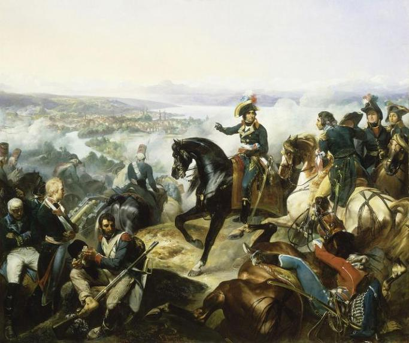
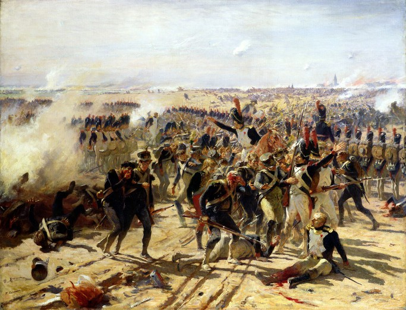
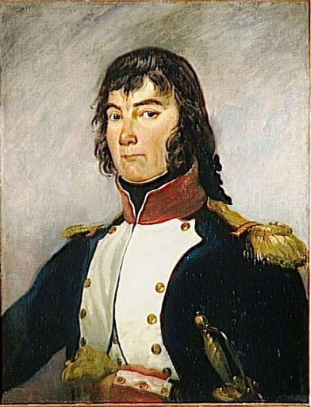
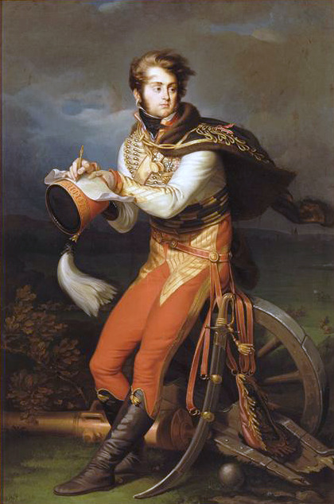
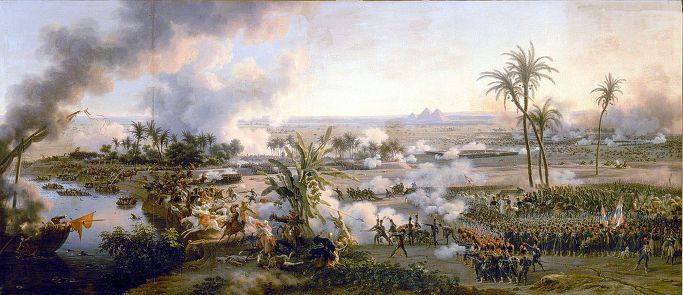

아스페른-에슬링 9편 - "질서있는 퇴진"
게시: 2017-04-02T21:19:30+09:00
군인의 목표는 승리와 전진이며, 이는 이룩하기 매우 어려운 과제입니다. 그러나 그것보다 훨씬 더 어려운 것이 바로 패배 수습과 질서있는 후퇴입니다. 나폴레옹도 '모든 문제는 승리하면 다 저절로 해결된다'라고 말한 바 있습니다만, 패배할 경우 없던 문제까지 수없이 생겨나기 때문입니다. 5월 22일 11시, 부교가 수리 불가 상태까지 붕괴된 것이 확인되자, 나폴레옹은 공세에 나섰던 병력을 철수시키기로 합니다. 그 명령에 의해 가장 곤란해진 것은 바로 란의 제2 군단이었습니다. 마세나의 제4 군단은 그나마 사정이 좀 나았습니다. 그들은 벌판으로 진격하지 않고 아스페른 마을 안에서 오스트리아군과 육박전을 벌이고 있었으므로, 일단 현 상황을 유지하기만 하면 되었던 것입니다. 그러나 란의 제2 군단은 중앙 전선을 돌파하라는 명령을 받고 가장 깊숙히 진격해 들어갔었지요. 이제 그들은 진격한 거리만큼을 다시 되돌아가야 했는데, 적에게 등을 보인 채로 허허벌판을 행군한다는 것은 정말 어려운 일이었습니다. 더군다나 이들의 뒤는 도나우강이 가로 막고 있었으므로, 이 후퇴 과정에서 대오가 무너지면 뒤를 쫓는 오스트리아군에 의해 글자 그대로 대학살로 이어질 수 있었습니다.
란에게는 천만다행스럽게도, 조금씩 뒤로 물러나는 오스트리아군의 추격은 그다지 거세지 않았습니다. 무슨 상황이 벌어진 것인지 카알 대공이 파악하는데 다소 시간이 걸린데다, 오스트리아군의 반격은 주로 포병에 의한 무자비한 포격에 의존했기 때문이었습니다. 아침에 거세게 시작되었던 란의 공격에 의해 오스트리아군 중앙부가 거의 붕괴된 상태였던지라, 카알 대공이 프랑스군의 후퇴를 깨닫고 추격을 할 때도 현장에 있던 호헨촐레른의 보병들을 이용하지 못하고 그의 친위 척탄병 부대를 불러와야 했으므로 추격에 시간이 걸렸습니다. 이 틈을 이용해 란의 제2 군단은 큰 피해를 입지 않고 일단 아침에 출발했던 밭두렁 뒤로 물러설 수 있었습니다. 그는 이 후퇴 과정에서 말에서 내려 자신의 발로 보병들과 함께 걸으며, 호시탐탐 프랑스 보병 연대들의 붕괴를 꾀하는 오스트리아 기병대의 돌격을 저지했습니다. 란은 침착하게 웃으며 휘하 병사들에게, 9년전 마렝고 전투에서도 자신들은 오스트리아군에게 쫓기는 신세였지만 해질녘 최후의 승자는 프랑스군이었다면서 겁에 질린 부하들을 독려했습니다.
중앙부와 에슬링을 방어해야 했던 란은 먼저 휘하 제2 군단의 대부분을 로바우 섬으로 철수시키기 위해 부교 쪽으로 보낸 뒤, 지휘관을 잃은 생-일레르 사단 하나만 이끌고 아스페른과 에슬링 사이를 연결하는 밭고랑을 끼고 방어선을 쳤습니다. 위태위태한 부교 하나를 통해 로바우 섬으로 철수해야 하는 전체 프랑스군이 무너지지 않으려면 누군가는 아스페른과 에슬링으로 연결되는 전선을 방어해야 했기 때문입니다. 아스페른은 마세나가 아침부터 틀어쥐고 있었고, 에슬링은 계속 부데 사단이 방어하고 있었습니다.
오후가 되자, 프랑스군을 도나우 강의 물결에 쳐박으려는 오스트리아군의 반격이 본격적으로 시작되었습니다. 프랑스군의 좌익인 아스페른의 마세나는 프랑스군 내 제2인자다운 강인함을 보여주었습니다. 그 역시 2대1의 수적 열세를 안고 싸웠는데도 오스트리아군에게 별로 밀리지 않은 것은 그의 개인적인 열정과 투지가 보여준 결과였습니다. 그 전날의 일이긴 합니다만, 최근 징집된 어린 병사들로 구성된 부대들이 유혈이 낭자한 살육전을 보고 겁에 질려 있다는 보고를 받자, 그는 벌컥 화를 내며 그 특유의 니스(Nice) 사투리로 '그럼 걔들에게 술을 잔뜩 먹이고 깃발을 보여줘라'라고 고함을 질렀다고 합니다. 그는 그에 그치지 않고, 조금이라도 아군이 밀리는 현장에 귀신처럼 나타나 위험을 무릅쓰고 병사들을 독려하는 등 참된 현장 지휘관이란 어떤 것인가를 여지없이 보여주었습니다. 덕분에 아스페른은 비록 조금씩 오스트리아군에게 점령되는 부분들이 늘어나기는 했지만 저녁 때까지도 프랑스군은 아스페른의 일부나마 끈질기게 붙고 있을 수 있었습니다.

(마세나는 나폴레옹의 지휘를 받지 않고도 전쟁 자체를 지휘할 만한 역량이 있는 인물로서, 나폴레옹 휘하의 1.5인자 정도의 위치를 차지하고 있었습니다. 그는 당시 이탈리아의 사르디니아 왕국 소속이었던 니스의 어느 가게 주인의 아들로 태어났는데, 어릴 때 아버지를 잃고 상선의 심부름꾼으로서 남미까지 항해를 하는 등 어려운 삶을 살았습니다. 백일천하 때 그는 부르봉 왕가와 나폴레옹 어느 쪽 편도 들지 않았습니다. 그림은 1799년 제2차 취리히 전투에서의 마세나의 모습입니다.)
에슬링에 대한 공격도 치열했습니다만, 거기를 지키는 부데 사단의 방언는 더욱 치열했습니다. 부데와 그의 병사들은 에슬링 마을의 서쪽 끝부분에 있던 거대한 곡물 창고를 주방어선으로 삼고 맹렬히 저항했습니다. 에슬링에 대한 오스트리아군의 공격은 로젠베르크가 이끌었는데, 그는 다스프레(Constantine D'Aspre) 장군의 헝가리 척탄병 4개 대대 (사실상 1개 사단)을 투입하여 5번이나 반복 공격했습니다. 그런데 기진맥진하고 수가 줄어든 부데 사단은 이를 5번 모두 격퇴해버렸습니다. 마지막에는 헝가리 척탄병들이 공격 명령을 거부할 정도였지요. 결국 로젠베르크는 휘하 군단 전체를 동원해야 했는데, 이 공격에서도 에슬링 전체를 장악하지는 못했습니다. 부데 사단은 격렬히 저항했으나 사단 하나가 군단 전체를 당해낼 수는 없었습니다. 에슬링 마을 건물들은 하나 둘씩 오스트리아군의 손에 넘어 갔고, 살아남은 프랑스군은 최후의 방어 거점이던 곡물 창고쪽으로 점점 밀리게 되었습니다.
오후 2시가 넘자 중앙부에서도 오스트리아군의 맹공이 시작되었습니다. 오스트리아군은 먼저 포병대를 앞세워 대포알을 신나게 날려보낸 뒤, 압도적인 수의 보병 대오를 파도처럼 흘려보냈습니다. 이를 맞이하는 란은 병력의 열세는 물론이고 탄약까지 충분한 상태가 아니었습니다. 시작부터 열세였던 그의 포병대는 이미 포병들의 사망과 부상으로 와해된 상태였고, 어차피 탄약이 거의 다 떨어진 상태였습니다. 그는 아스페른-에슬링을 연결하는 밭두렁 뒤에서 침착하게 기다리다 오스트리아 보병들이 지근거리까지 접근한 뒤에 갑자기 일제 사격을 퍼붓는 방식으로 오스트리아군을 효과적으로 격퇴했습니다. 그의 뒤 머지 않은 곳에는 나폴레옹 본인이 근위대 병력을 이끌고 대기하고 있었으므로 란의 병사들은 나폴레옹 버프 효과를 보고 있었지요.

(아스페른-에슬링 전투를 묘사한 가장 유명한 그림입니다. 그림의 구도를 보면 아마도 나폴레옹 근위대가 일렬로 늘어서서 지키고 있는 교두보 뒤로 란의 제2 군단 병사들이 후퇴하고 있는 것을 묘사한 것으로 보입니다. 이 그림은 페르낭 코르몽 Fernand Cormon이라는 화가가 그린 것인데, 이 분은 1845년 생으로서 이 그림은 실제 전투 이후 거의 70년이 지난 1878년에 그려진 것입니다. 나폴레옹이라는 인간은 자신이 패전한 전투에 대해 그림을 발주할 정도로 팩트를 존중하는 위인은 아니었지요.)
에슬링 마을이 거의 다 함락되고, 부데 사단의 잔여 병력이 마침내 곡물 창고 안에서 포위된 채로 농성 중인 상황이라는 보고가 들어오던 오후 3시 쯤, 엎친데 덮친 격의 보고가 날아들었습니다. 도나우 강 좌안과 로바우 섬을 연결해주던 짧은 부교까지도 무너졌다는 보고였습니다. 이젠 마세나와 란 뿐만 아니라, 나폴레옹의 퇴로까지도 끊긴 것이었습니다.
나폴레옹은 침착했습니다. 나폴레옹은 비록 젊은 나이였지만, 별의별 경험을 다 겪어본 백전 노장이었으니까요. 그는 로바우 섬으로의 퇴로를 연결해줄 다리 수리는 부교병들에게 맡겼으므로 신경쓰지도 않았습니다. 대신 그가 주목한 것은 바로 에슬링이었습니다. 지금 프랑스군이 버티고 있는 것은 부교의 교두보를 좌우에서 지켜주는 아스페른과 에슬링이라는 두 방어 거점을 틀어쥐고 있기 때문이었습니다. 그런데 이 둘 중 어느 한쪽이라도 무너질 경우, 부교의 교두보 지점도 오스트리아군의 공격에 그대로 노출되므로 자연스럽게 무너질 수 밖에 없었습니다. 즉, 에슬링이 무너진다면 부교가 돌다리로 되어 있다고 하더라도 프랑스군은 전멸의 위기에 놓이는 것이었습니다.

(조르쥬 무통 장군입니다. 이 분은 그렇게 눈에 띄는 전공을 세운 적은 없었고, 아스페른-에슬링 전투에서도 대단한 공을 세웠다고 하기는 좀 어렵습니다. 그러나 나폴레옹은 다음 해인 1810년 이 양반을 로바우 백작(comte de Lobau)으로 봉하여 그의 공로를 치하했습니다. 그래서인지 그는 끝까지 나폴레옹에게 충성했고, 백일천하 때도 나폴레옹 편에 섰습니다.)
따라서 나폴레옹은 에슬링 구원에 우선 순위를 두었습니다. 어쩔 수 없이 에슬링을 내준다고 하더라도, 그 쪽 방면의 병력이 질서있는 후퇴를 해야 했습니다. 그는 보통 최후의 순간까지 아껴두는 예비대인 친위대 중 5개 대대를 무통(Georges Mouton) 장군의 지휘 하에 에슬링으로 급파했습니다. 친위대 중 남은 것은 2개 대대 뿐이었으므로 이는 대단한 모험이었습니다. 5개 대대라고 해봐야, 당시의 편제상으로 보면 1개 사단이 조금 넘는 병력이었습니다. 아니나 다를까, 무통 장군의 공격은 훨씬 수적으로 우세한 로젠베르크 군단에게 막혀 실패로 돌아갔고, 부데 사단은 곡물 창고에서 빠져 나올 수 없었습니다. 부데 사단의 구출은 고사하고, 이젠 무통 장군이 이끄는 친위대 대부분까지 로젠베르크와의 교전에 붙잡혀 철수가 어렵게 된 셈이었으니, 나폴레옹의 모험은 실패로 끝난 셈이었습니다.

(루이-프랑수와 르죈 대령입니다. 르죈이라고 하면 '화가 아니던가'하는 생각이 드실 수도 있는데, 맞습니다. 이 분은 화가이자 군인이었고, 나폴레옹의 후원한 많은 전쟁화 중 여러개가 이 양반 작품입니다.)

(르죈의 대표작 중 하나인 피라미드 전투입니다. 나중에 런던 피카딜리의 Egyptian Hall에서 이 작품을 포함한 그의 전쟁화 몇 편을 전시할 때 그림을 좀더 자세히 보고자하는 사람들이 하도 몰려들어 그림 보호를 위해 접근 제한 레일을 그림 앞에 설치해야 할 정도였다고 합니다.)
이때 나폴레옹에게 남은 것은 정말 친위대 2개 대대 뿐이었습니다. 이마저도 에슬링에 투입한다면 중앙부의 오스트리아군과 부교 사이에는 정말 탄약도 힘도 병력도 거의 남아 있지 않은 란의 생-일레르 사단 하나 뿐이었습니다. 그 외에는 겁에 질린 채 철수해온 란의 제2 군단 잔여 병력 중 아직 로바우 섬으로 건너가지 못한 일부 병력 뿐이지요. 나폴레옹은 란에게 르죈(Louis-François Lejeune) 대령을 보내 병력이 얼마나 남았는지, 그리고 얼마나 더 버틸 수 있는지를 묻게 했습니다. 르죈이 란을 찾아냈을 때, 란은 휘하 병사들과 함께 아직도 아스페른-에슬링 사이의 밭고랑 뒤에 웅크리고 있었습니다. 그에게는 약 500명 가량의 병사들 뿐이었는데, 나폴레옹의 말을 전하는 르죈에게 란은 다음과 같이 답했습니다.
"내게 남은 병력은 자네 눈에 보이는 것이 전부라네. 그리고 버틸 수 있는 것은 그 최후의 1인이 쓰러질 때까지니까, 가서 황제께 그렇게 전하게."
르죈의 보고를 받은 나폴레옹은 란을 믿었나 봅니다. 그는 참모들 중 랍(Jean Rapp) 장군에게 남은 2개 대대의 친위대를 맡기며 에슬링에 가서 거기 묶인 부데 사단과 무통 장군의 친위대를 빼내 오라고 명령했습니다. 그리고 나폴레옹은 남은 패잔병들과 함께 그야말로 도나우 강변 좁은 돌출부에 옹기종기 몰린 상태가 되어 버렸습니다. 나중의 일이긴 합니다만, 전투가 종료된 이후 카알 대공은 프란츠 황제에게 보낸 편지에서 '나폴레옹은 생애 처음으로 전투에서 자기 목숨을 건지기 위해 발버둥쳤다'라고 썼는데, 최소한 이때의 상황에서는 카알 대공의 과장된 보고도 그렇게 틀린 것만은 아니었습니다. 나폴레옹과 그의 프랑스군은 그야말로 풍전등화의 위기였습니다.
Source : The Emperor's Friend: Marshal Jean Lannes By Margaret S. Chrisawn
Three Napoleonic Battles By Harold T. Parker
The Life of Napoleon Bonaparte, by William Milligan Sloane
https://en.wikipedia.org/wiki/Battle_of_Aspern-Essling
http://www.historyofwar.org/articles/battles_aspern_essling.html
https://www.napoleon.org/en/history-of-the-two-empires/articles/the-battle-of-aspernessling/
https://en.wikipedia.org/wiki/Louis-Fran%C3%A7ois_Lejeune